ภาพประกอบผลงานทางด้านอีสปอร์ต
นาย ภานุพงศ์ ชลสินธุ์
ผู้ช่วยผู้ตัดสินการแข่งขัน
การแข่งขันกีฬาเยาวชนแห่งชาติ ครั้งที่41 “สุราษฎร์ธานีเกมส์”
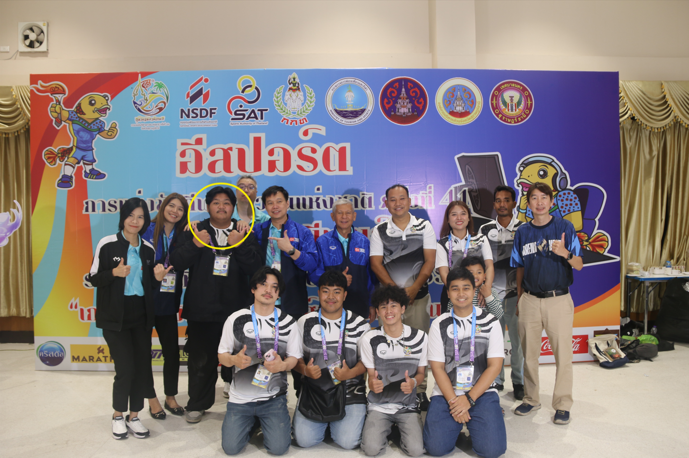
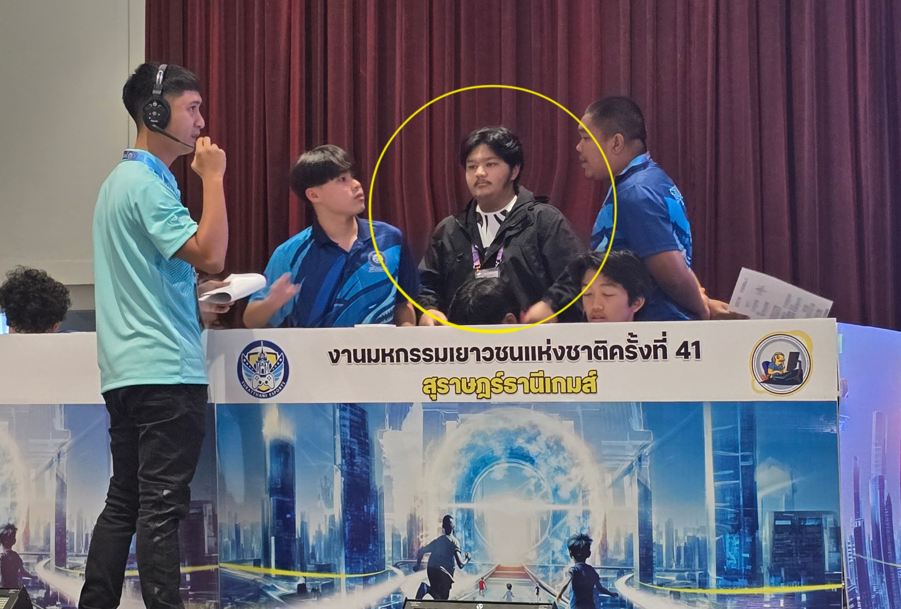
ผู้ช่วยผู้ตัดสินการแข่งขัน
การแข่งขัน กีฬานักเรียนองค์กรปกครองส่วนท้องถิ่นแห่งประเทศไทย
ครั้งที่39 “ เมืองคนดีเกมส์ ”
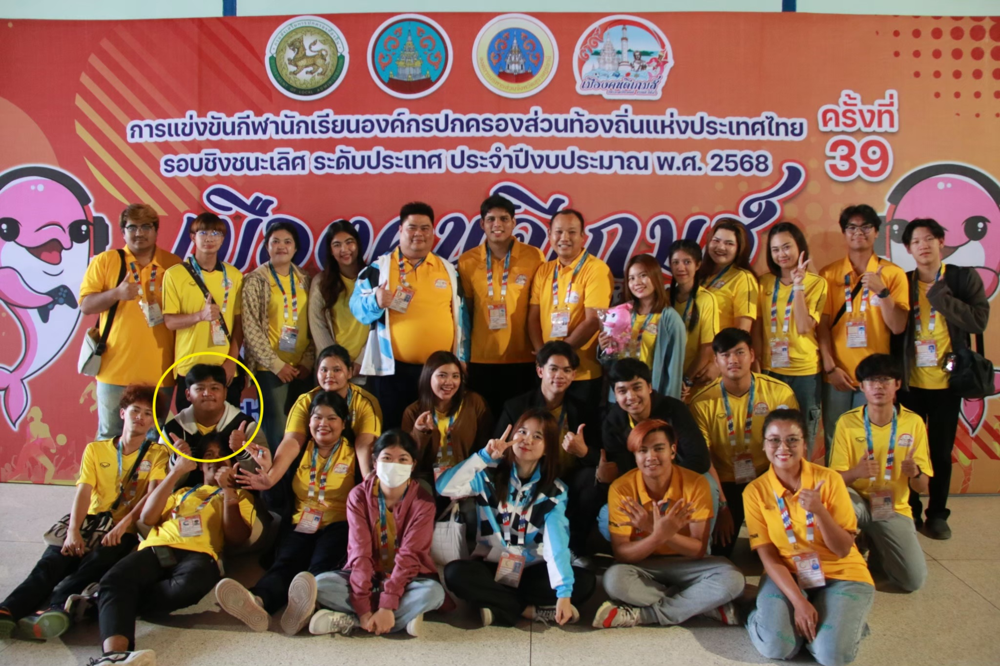
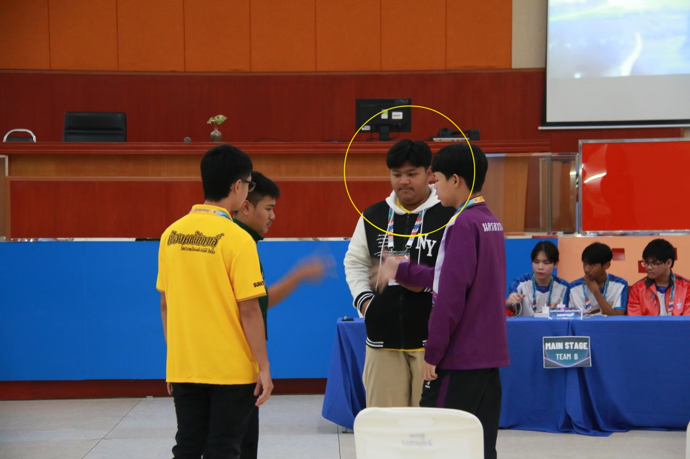
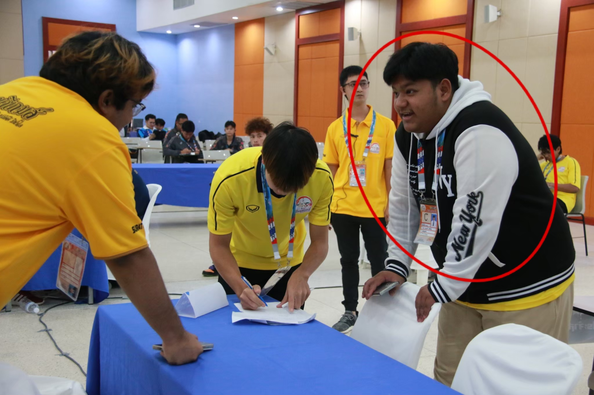
ผู้ช่วยผู้ตัดสินการแข่งขัน
การแข่งขัน กีฬาเพื่อการพัฒนาสมรรถนะผู้เรียนโดยใช้กีฬาเป็นฐาน(กีฬา
กศจ.สุราษฎร์ธานี)
เข้าร่วมการอบรม
โครงการอบรมพัฒนาองค์ความรู้สำหรับผู้ตัดสินอีสปอร์ต
ตามโครงการกีฬาเพื่อสร้างสังคมที่แข็งแรง สร้างอาชีพและรายได้
กีฬาเพื่อสร้างศักยภาพของประเทศ "Domestic Power" การพัฒนาเยาวชน Youth
Development ประจำปี 2568
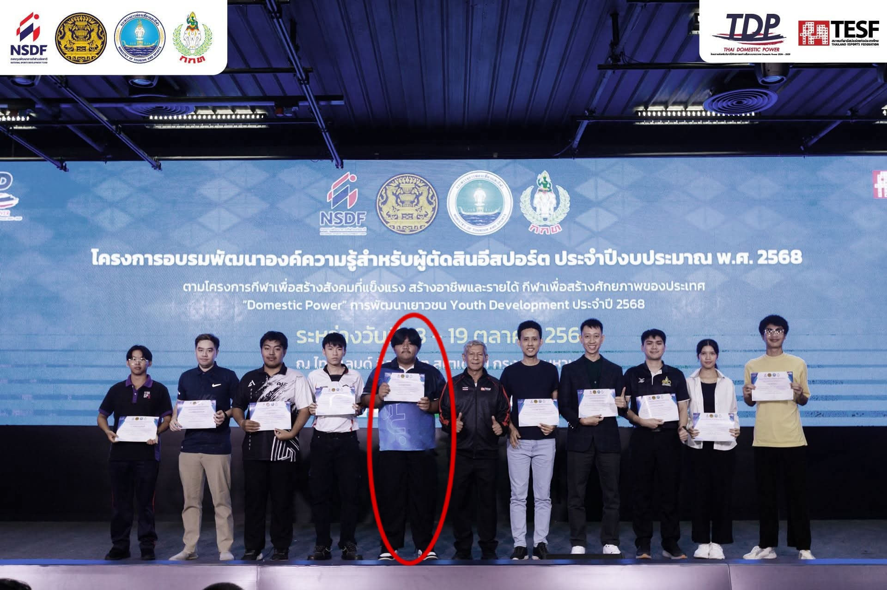
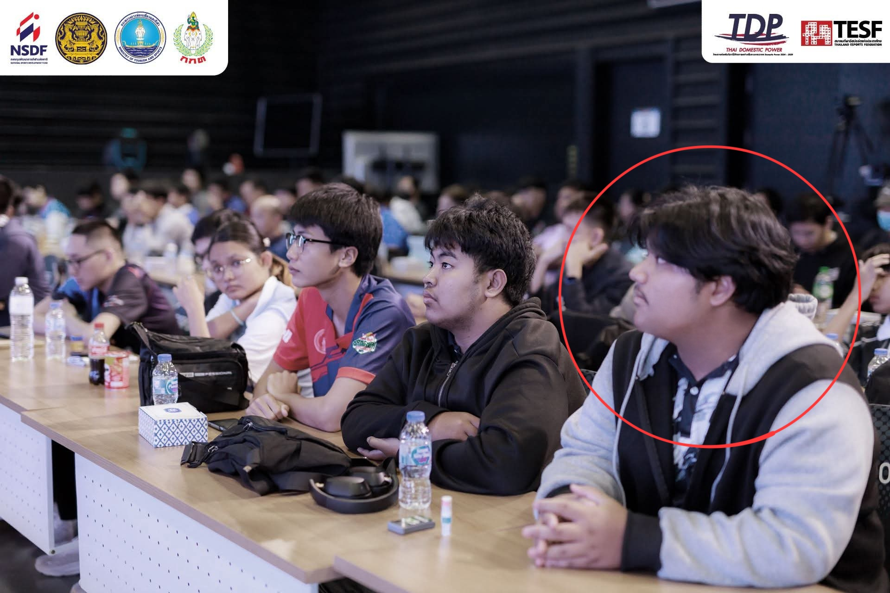
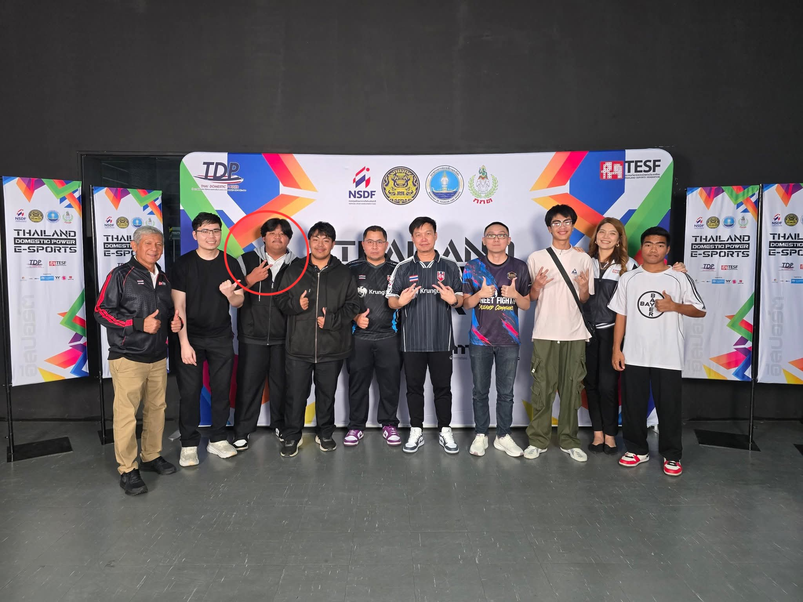
การทำงานในตำแหน่ง ประธานชมรม PSU Surat Esport
ผู้จัดการแข่งขันและตัดสินการแข่งขัน ในการแข่งขันกีฬาอีสปอร์ตทั้งหมดภายในมหาวิทยาลัย
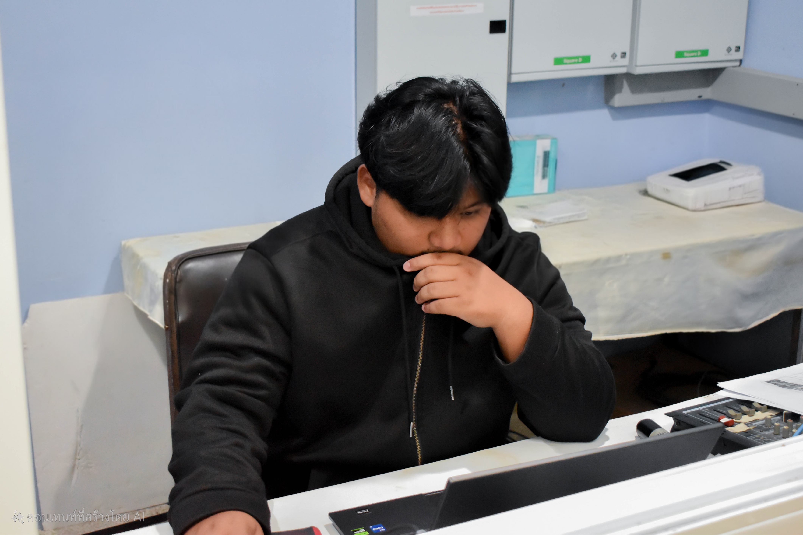
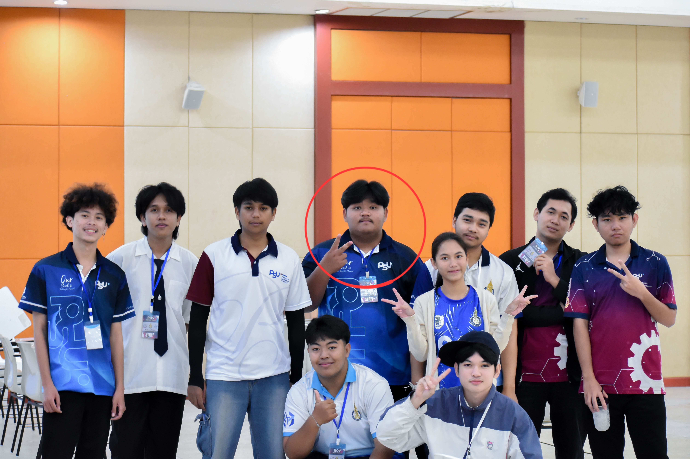
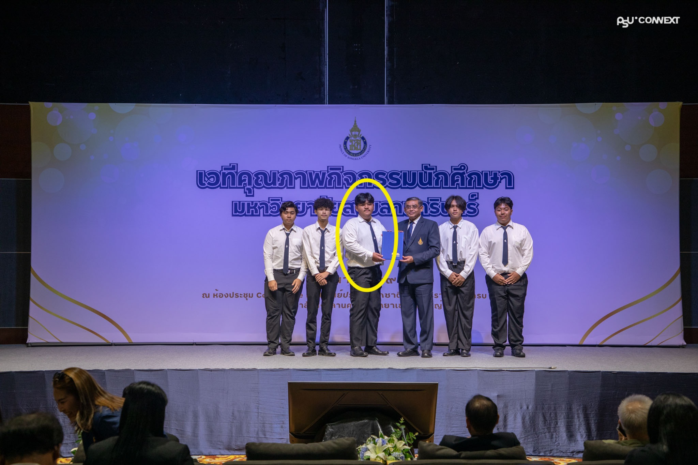